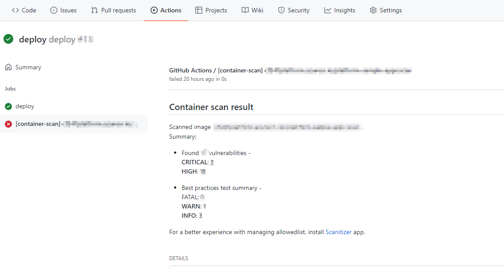
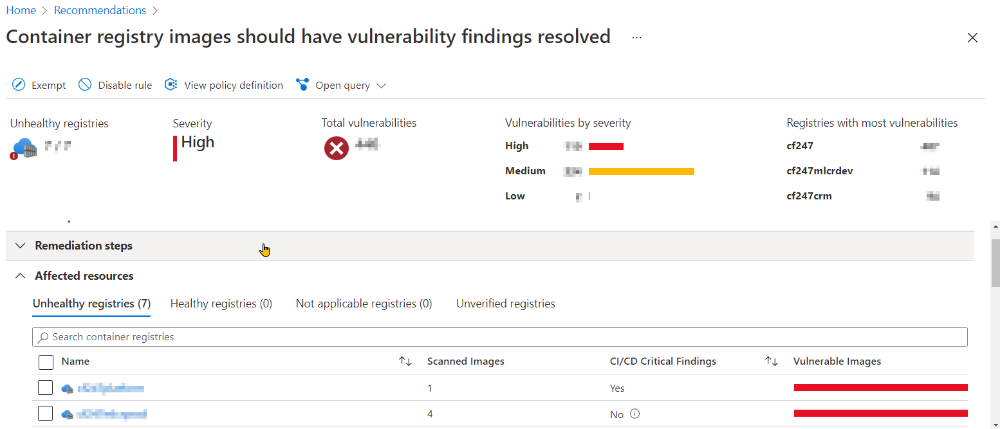

Azure Defender for Cloud
January 15, 2022 - 3 mins read time - 617 words - garrardkitchen
Defender for Cloud Containers
Setting up Defender for Cloud Containers to work with your CICD pipeline is quick and uncomplicated. I do not walk through these set up steps in this post. For that, you can follow those few steps here in this Microsoft post instead ➡ Setup. The goal of this post is to highlight a few areas of interest and to share my opinions on this feature. I have understandably obfuscated sensitive information.
TL;DR:
Pros:
- Rapid inclusion in your GH Actions CICD pipeline
- Uncomplicated
- Adherence to industry preferred practice
Cons:
- Expected ALL findings from GHA run to be visible in Defender blade
- Doesn’t support windows containers (.NET Framework workloads) 😱 substantiated here ➡ Availability
Set up
It takes very little time to configure image scanning and to secure your container images. In my current role as Head of Cloud Platform at Carfinance 247 I am spear heading the migration effort to move our entire workload real estate from on-premise to Azure. As part of this mission, we’re using GH Actions for our CICD pipelines. Azure Defender of Cloud Containers compliments GH Actions and I personally have found it a very painless exercise 1. It takes little more time than it does to actually read their instructions to configure, run and see the scan summary and remediation advice.
With regards to configuring Azure Defender for Cloud, all it takes a few mouse clicks and you’re done. During this process, you will be required to copy 2 values it makes available to you that will need to be added as GitHub secrets.
The final step is to insert 2 GH Actions into your GHA Workflow. You may need to seperate your build and push steps as per their instructions. Below is a snippet from one of our deploy GH Actions Workflows that shows how we’ve incorporated these GH Actions:
...
- name: BUILD IMAGE
run: |
cd ${{ env.ROOT_DIR }}
docker build -t ${{ env.ACR_NAME }}/${{ env.APP_DOCKERIMAGE }}:${{ env.TAG }} -f ${{ env.ROOT_DIR }}/${{ env.APP_DOCKERFILE }} .
errorCode=$?
if [ $errorCode -ne 0 ]; then
echo "Could not build to ACR, error occured with docker build"
exit 1
fi
- name: SCAN FOR VULNERABILITIES
uses: Azure/container-scan@v0
id: container-scan
continue-on-error: true
with:
image-name: ${{ env.ACR_NAME }}/${{ env.APP_DOCKERIMAGE }}:${{ env.TAG }}
- name: PUSH TO ACR
run: |
docker push ${{ env.ACR_NAME }}/${{ env.APP_DOCKERIMAGE }}:${{ env.TAG }}
errorCode=$?
if [ $errorCode -ne 0 ]; then
echo "Could not build to ACR, error occured with docker build"
exit 1
fi
- name: POST LOGS TO APPINSIGHTS
uses: Azure/publish-security-assessments@v0
with:
scan-results-path: ${{ steps.container-scan.outputs.scan-report-path }}
connection-string: ${{ secrets.AZ_APPINSIGHTS_CONNECTION_STRING }}
subscription-token: ${{ secrets.AZ_SUBSCRIPTION_TOKEN }}
...
👆 We are not using (AZ_APPINSIGHTS_CONNECTION_STRING, AZ_SUBSCRIPTION_TOKEN) secrets names
Results
There are 2 places where you can view the Commons Vulnerabilities and Exposures. These locations are wihtin GH Actions and the Defender for Cloud Blade in the Azure portal.
GH Action Job

Azure blade

Summary
In summary:
- I found it quick to get up and running and see the CVEs and remediation advice
- 1 - Like with most processes, IMO, if there’s no predetermined action to react to findings - e.g. automated Runbook - then it’s a pointless exercise and your organisation will remain exposed to such vulnerabilities
- IMO, this has be part of a wider initiative. For example, the inclusion of code quality analysis is a must to avoid vulnerabilities, bugs and poor coding practices/implementations making it into the codebase in the first place. This is how we roll. GitHub makes this easy!
- I find it surprising how many CVEs, irrespective of criticality, are present in established docker images. You don’t have to look far to discover them!